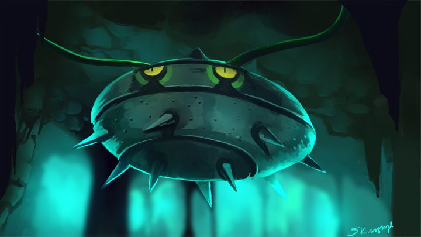
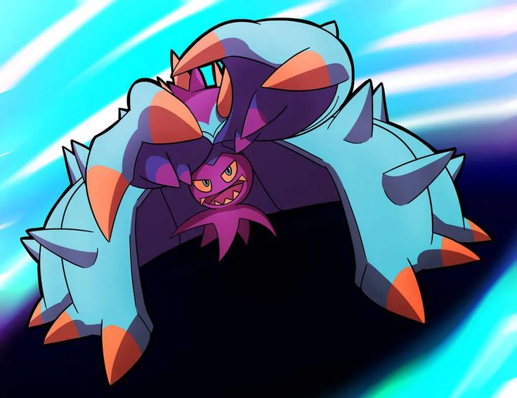
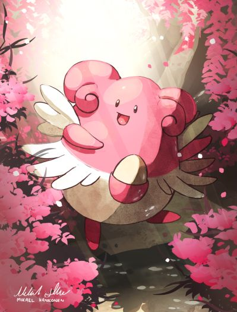
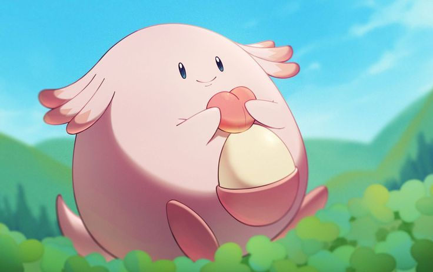
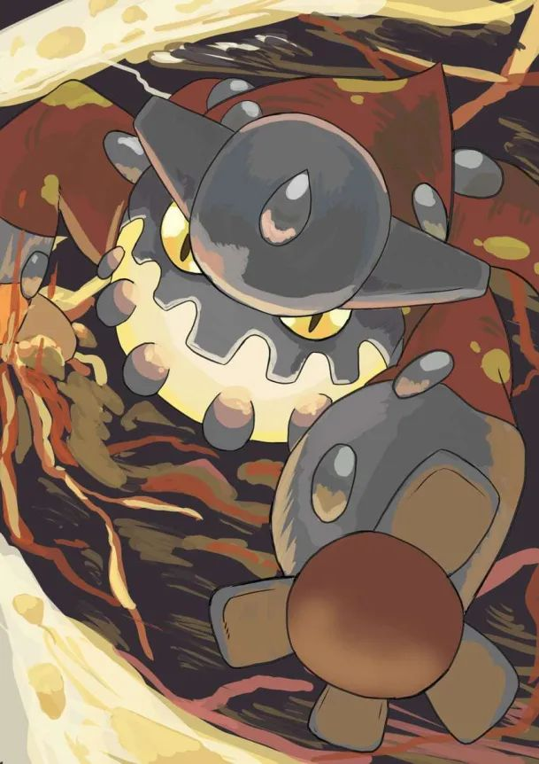

Los Mejores Pokemon Defensivos 💀
Modo Terrorista: Activado
El Arte del Stall: Muros Absolutos y el Fin de la Diversión
Olvídate de los sweepers y la velocidad. La verdadera maestría está en la paciencia, en la predicción y en aguantar lo imposible. Estos son los Pokémon que definen el concepto de "pared":
1. Ferrothorn: El Rey de los Peligros y la Inmortalidad
No es el más rápido, ni el más fuerte, pero es casi imposible de matar si se usa bien.
Por qué es una bestia: Su combinación de tipos Planta/Acero le da solo dos debilidades (Fuego y Lucha), pero la friolera de 10 resistencias y una inmunidad. Es el usuario definitivo de Trampa Rocas (Stealth Rock) y Púas (Spikes).
La táctica: Entra, pone sus trampas, usa Latigazo (Power Whip) para castigar a los tipo Agua/Tierra, y recupera vida con Drenadoras (Leech Seed). Con Restos (Leftovers) y Casco Dentado (Rocky Helmet), castiga a cualquier atacante físico. Es el primer muro en el que debes pensar.

2. Toxapex: El Muro Venenoso Defensivo
La pesadilla de cualquier atacante físico y la definición de "caja de acero" (aunque sea una medusa).
Por qué es una bestia: Con unas defensas base absurdas (152 de Defensa y 142 de Defensa Especial) y la habilidad Regeneración (Regenerator), Toxapex simplemente no se va. Entra, absorbe un golpe, se cura un tercio de su vida al salir, y repite.
La táctica: Su función es desgastar. Usa Escalda (Scald) para quemar (anulando atacantes físicos y haciendo daño residual), Púas Tóxicas (Toxic Spikes) para envenenar a todo el equipo rival, y Recuperación (Recover) para mantenerse a tope. Es un ciclo interminable de dolor para el oponente.

3. Blissey: El Coloso Especial y la Máquina de Deseos
La pared más grande contra cualquier atacante especial.
Por qué es una bestia: Tiene más PS que casi cualquier cosa en el juego (255 base) y una Defensa Especial decente. Puede recibir un Rayo Solar de Charizard o un cometa drástico de Dragapult y reírse.
La táctica: Blissey no solo se cura a sí misma con Amortiguador (Soft-Boiled), sino que es el mejor usuario de Deseo (Wish) para curar a sus compañeros. Además, es el principal usuario de Movimiento Sísmico (Seismic Toss), asegurando 100 puntos de daño fijos independientemente de las defensas del rival, convirtiendo a cualquier muro en una amenaza ofensiva a largo plazo.

Los Antídotos: Counters y Checks Anti-Meta
A veces, no necesitas un muro, necesitas un especialista diseñado para destruir a una amenaza específica. Estos son los Pokémon que rompen las reglas del juego.
1. Chansey (Eviolite): El Verdadero Tanque Mixto
Más peligrosa que su evolución, Blissey, en términos puramente defensivos.
Por qué es una bestia: Al equiparle el Mineral Evolutivo (Eviolite), sus defensas aumentan un 50%. Esto la hace, con diferencia, el Pokémon más tanque de la historia en términos de bulk mixto (combinando PS, Defensa y Defensa Especial). Aguanta golpes físicos que harían pedazos a Blissey.
La táctica: Idéntica a la de Blissey, pero con mucha más resistencia física. Es la columna vertebral de muchos equipos defensivos. Si el rival no tiene un Pokémon con Mofa (Taunt) o un movimiento de potenciación muy fuerte, Chansey es inquebrantable.

2. Corviknight: El Impenetrable Defensor Aéreo
El mejor "quitarrocas" (Defogger) defensivo del juego moderno.
Por qué es una bestia: Tipo Volador/Acero es fantástico. Inmune a Tierra, resistente a casi todo lo demás. Su habilidad Presión (Pressure) agota los PP de los ataques del rival, y Cuerpo Acorazado (Mirror Armor) devuelve cualquier reducción de estadísticas al atacante.
La táctica: Es un muro físico excelente. Entra, usa Respiro (Roost) para curarse y quitarse el tipo Volador (ganando resistencia a Eléctrico y Hielo temporalmente), y usa Despejar (Defog) para limpiar el campo de las trampas del rival, frustrando la estrategia de entrada. Es la espina dorsal de muchos equipos de balance.
.jpg) 3. Heatran: El Asesino de Acero y Fuego
Un Pokémon legendario diseñado específicamente para cazar a otros Pokémon de Acero y resistir ataques de Fuego.
Por qué es una bestia: Su habilidad Absorbe Fuego (Flash Fire) no solo anula los ataques de Fuego, sino que potencia los suyos un 50%. Tiene 8 resistencias, incluyendo Hada, Acero y Hielo.
La táctica: Es el mejor counter de Ferrothorn y Corviknight. Entra gratis ante ellos, usa Mofa (Taunt) para evitar que pongan trampas, y los incinera con un Llamarada (Fire Blast) potenciado. También es un gran usuario de Trampa Rocas y Tierra Viva (Earth Power) para cubrir sus propias debilidades.
3. Heatran: El Asesino de Acero y Fuego
Un Pokémon legendario diseñado específicamente para cazar a otros Pokémon de Acero y resistir ataques de Fuego.
Por qué es una bestia: Su habilidad Absorbe Fuego (Flash Fire) no solo anula los ataques de Fuego, sino que potencia los suyos un 50%. Tiene 8 resistencias, incluyendo Hada, Acero y Hielo.
La táctica: Es el mejor counter de Ferrothorn y Corviknight. Entra gratis ante ellos, usa Mofa (Taunt) para evitar que pongan trampas, y los incinera con un Llamarada (Fire Blast) potenciado. También es un gran usuario de Trampa Rocas y Tierra Viva (Earth Power) para cubrir sus propias debilidades.

Mención Honorífica (La Pesadilla del Meta Actual)
4. Gliscor (Habilidad: Poison Heal): La Inmortalidad Andante
El maestro del desgaste y la resistencia física.
Por qué es una bestia: Al equiparle la Tóxico-Esfera (Toxic Orb) y tener la habilidad Cura Veneno (Poison Heal), Gliscor se envenena a sí mismo, pero en lugar de perder vida, recupera 1/8 de su PS cada turno (más que los Restos). Es inmune a otros estados (como Parálisis o Quemaduras).
La táctica: Es el muro físico definitivo. Se cura más de lo que le hacen daño. Con Protección (Protect), Sustituto (Substitute), Terremoto (Earthquake) y Tóxico (Toxic) o Desarme (Knock Off), puede desgastar a equipos enteros por sí solo, obligando al rival a rendirse por pura frustración.
 Estos no son Pokémon, son herramientas de tortura psicológica. Úsalos sabiamente.
Estos no son Pokémon, son herramientas de tortura psicológica. Úsalos sabiamente.